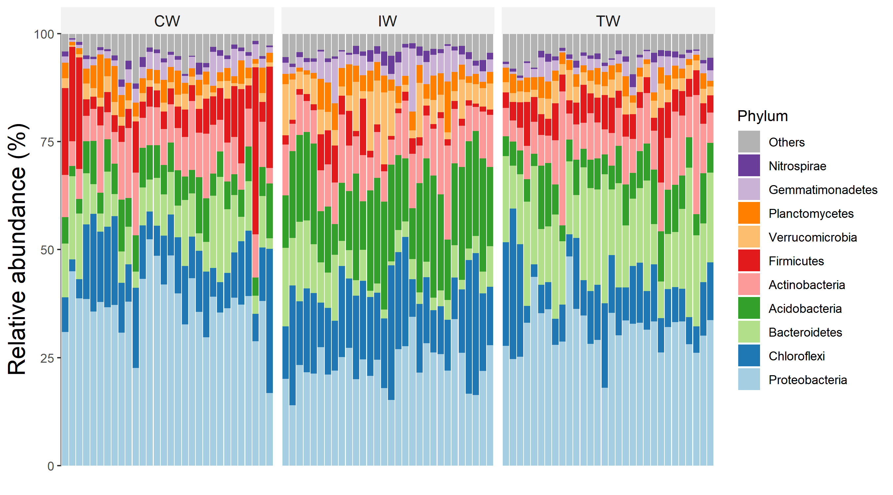
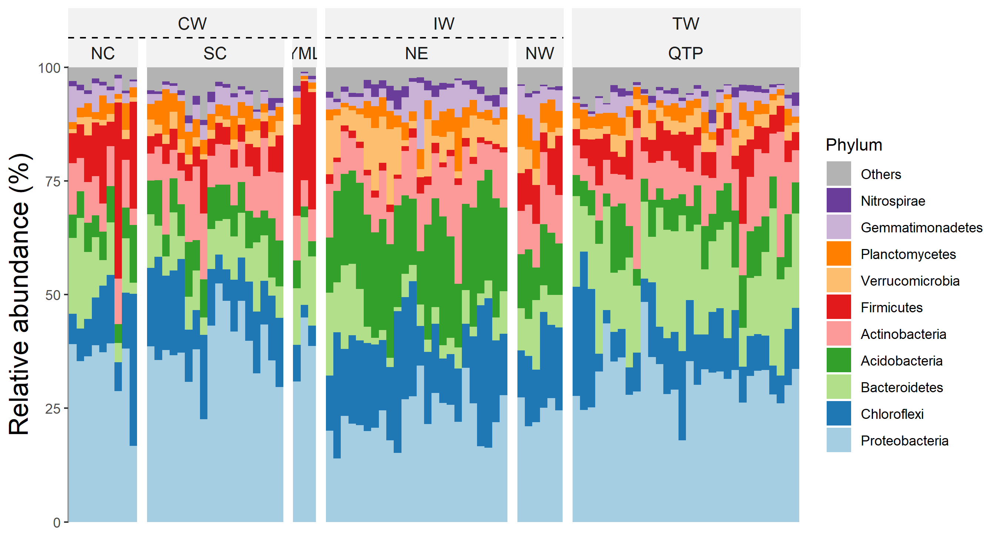
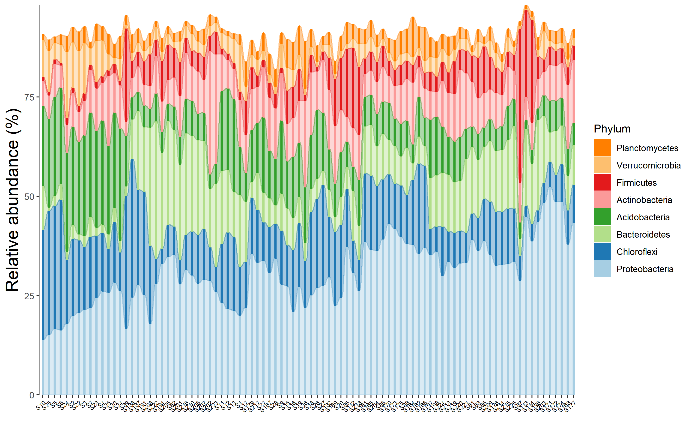
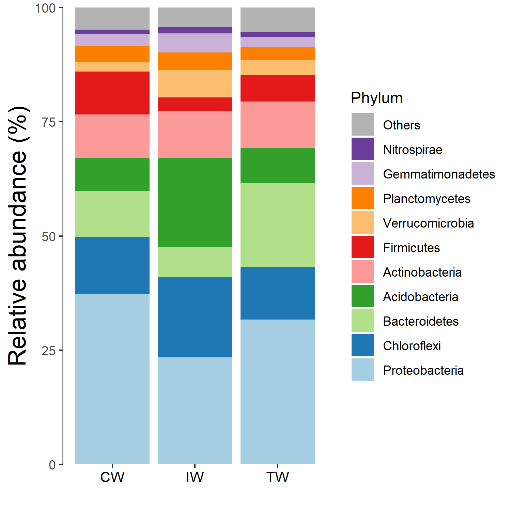
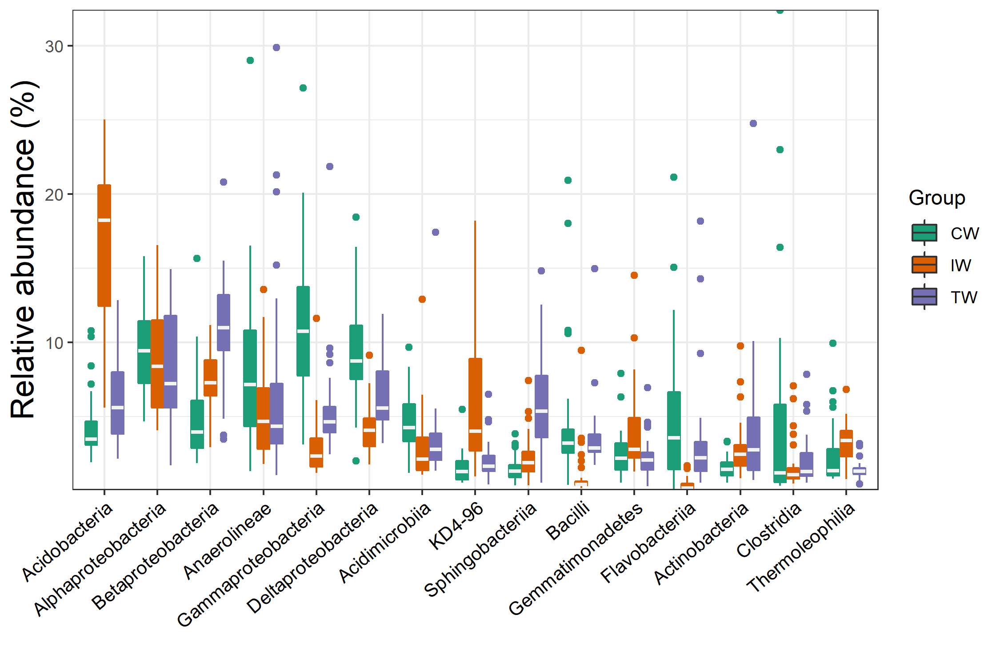
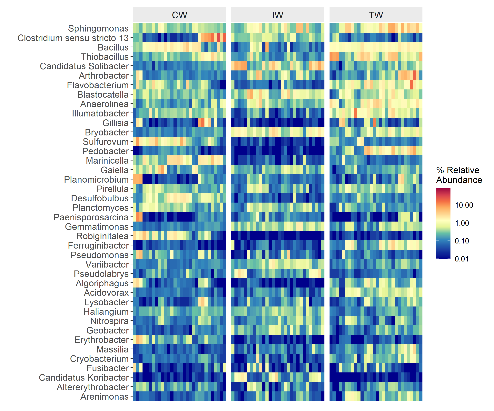

Chapter 4 Composition-based class
The trans_abund class and trans_venn class are grouped into ‘Composition-based class,’ since they are mainly used to show the composition information of communities.
4.1 trans_abund class
The trans_abund class is used to transform taxonomic abundance data to plots with the ggplot2 package. As a premise, the taxa_abund list in the object of microtable class must be first calculated.
4.1.1 Example
We first show the bar plot example.
# create trans_abund object
# use 10 Phyla with the highest abundance in the dataset.
t1 <- trans_abund$new(dataset = dataset, taxrank = "Phylum", ntaxa = 10)
# t1 object now include the transformed abundance data t1$abund_data and other elements for the following plottingAs the sample number is large, we do not show the sample names in x axis and add the facet to show abundance according to groups.
t1$plot_bar(others_color = "grey70", facet = "Group", xtext_keep = FALSE, legend_text_italic = FALSE)
# return a ggplot2 object
# two facets example
# require package ggh4x, please run install.packages("ggh4x") if not installed
t1$plot_bar(others_color = "grey70", facet = "Group", facet2 = "Type", xtext_keep = FALSE, legend_text_italic = FALSE, barwidth = 1)
The alluvial plot is also implemented in the plot_bar function with use_alluvium parameter.
t1 <- trans_abund$new(dataset = dataset, taxrank = "Genus", ntaxa = 8)
# require ggalluvial package
# use_alluvium = TRUE make the alluvial plot, clustering =TRUE can be used to reorder the samples by clustering
# select another color palette
t1$plot_bar(use_alluvium = TRUE, clustering = TRUE, xtext_type_hor = FALSE, xtext_size = 6, use_colors = RColorBrewer::brewer.pal(8, "Set2"))
The bar plot can also be performed with group mean values.
# The groupmean parameter can be used to obtain the group-mean barplot.
t1 <- trans_abund$new(dataset = dataset, taxrank = "Phylum", ntaxa = 10, groupmean = "Group")
g1 <- t1$plot_bar(others_color = "grey70", legend_text_italic = FALSE)
g1 + theme_classic() + theme(axis.title.y = element_text(size = 18))
The box plot is an excellent way to intuitionally show data distribution across groups.
# show 15 taxa at Class level
t1 <- trans_abund$new(dataset = dataset, taxrank = "Class", ntaxa = 15)
t1$plot_box(group = "Group")
Then we show the heatmap with the high abundant genera.
# show 40 taxa at Genus level
t1 <- trans_abund$new(dataset = dataset, taxrank = "Genus", ntaxa = 40)
t1$plot_heatmap(facet = "Group", xtext_keep = FALSE, withmargin = FALSE)
Then, we show the pie chart with the group mean values.
t1 <- trans_abund$new(dataset = dataset, taxrank = "Phylum", ntaxa = 6, groupmean = "Group")
# all pie chart in one row
t1$plot_pie(facet_nrow = 1)
4.1.2 Key points
- trans_abund$new: creating trans_abund object can invoke taxa_abund in microtable for transformation
- use_colors parameter: use_colors parameter in each function is used for colors selection
- input_taxaname parameter: input_taxaname parameter in trans_abund$new can be used to select interested customized taxa instead of abundance-based selection
- use_percentage parameter: use_percentage parameter in trans_abund$new - whether show the abundance percentage
4.2 trans_venn class
The trans_venn class is used for venn analysis, i.e. shared and unique taxa.
4.2.1 Example
This part can be performed using samples or groups at OTU/ASV level or higher taxonomic level. To analyze the unique and shared OTUs of groups, we first merge samples according to the “Group” column of sample_table.
# merge samples as one community for each group
dataset1 <- dataset$merge_samples(use_group = "Group")
# dataset1 is a new microtable object
# create trans_venn object
t1 <- trans_venn$new(dataset1, ratio = NULL)
t1$plot_venn()
# create venn plot with more information
t1 <- trans_venn$new(dataset1, ratio = "seqratio")
t1$plot_venn()
# The integer is OTU number
# The percentage data is the sequence number/total sequence number
When the groups are too many to show with venn plot, using petal plot is better.
# use "Type" column in sample_table
dataset1 <- dataset$merge_samples(use_group = "Type")
t1 <- trans_venn$new(dataset1)
t1$plot_venn(petal_plot = TRUE, petal_center_size = 50, petal_r = 1.5, petal_a = 3, petal_move_xy = 3.8, petal_color_center = "#BEBADA")
Generally, after getting the venn plot, we do not know what those shared or unique taxa are. The composition of the unique or shared species may account for the different and similar parts of ecological characteristics across groups(Mendes et al. 2011). So, it is interesting to further analyze the composition of unique and shared species. For this goal, we first transform the results of venn plot to the traditional species-sample table, that is, another object of microtable class.
dataset1 <- dataset$merge_samples(use_group = "Group")
t1 <- trans_venn$new(dataset1)## The result is stored in object$venn_table and object$venn_count_abund ...# transform venn results to the sample-species table, here do not consider abundance, only use presence/absence.
t2 <- t1$trans_venn_com(use_frequency = TRUE)
# t2 is a new microtable class, each part is considered a sample
class(t2)## [1] "microtable" "R6"We use bar plot to show the composition at the Genus level.
# calculate taxa abundance, that is, the frequency
t2$cal_abund()
# transform and plot
t3 <- trans_abund$new(dataset = t2, taxrank = "Genus", ntaxa = 8)
t3$plot_bar(bar_type = "part", legend_text_italic = T, ylab_title = "Frequency (%)", xtext_type_hor = FALSE, use_colors = RColorBrewer::brewer.pal(8, "Set2"),
order_x = c("IW", "CW", "TW", "IW-CW", "IW-TW", "CW-TW", "IW-CW-TW"))
We also try to use pie chart to show the compositions at the Phylum level.
t3 <- trans_abund$new(dataset = t2, taxrank = "Phylum", ntaxa = 8)
t3$plot_pie(facet_nrow = 3, use_colors = rev(c(RColorBrewer::brewer.pal(8, "Dark2"), "grey50")))